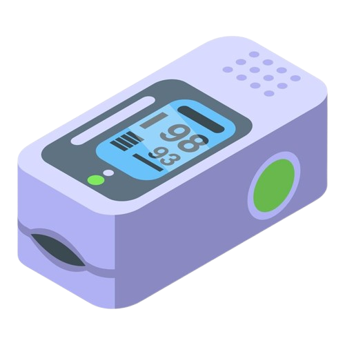

Pulse oximeters use both a red and infrared LED to shine light through your finger.
Oxygen rich blood absorbs more of the infrared light, while oxygen deprived blood absorbs more red light.
The device uses maths to calculate the ratio of red to infrared light with every pulse, and outputs the result as a percentage doctors can understand.
Finding your pulse...
Melanin, makeup and nail varnish all reduce the amount of light that reaches the detector, leaving a weaker and noisier signal to work from.